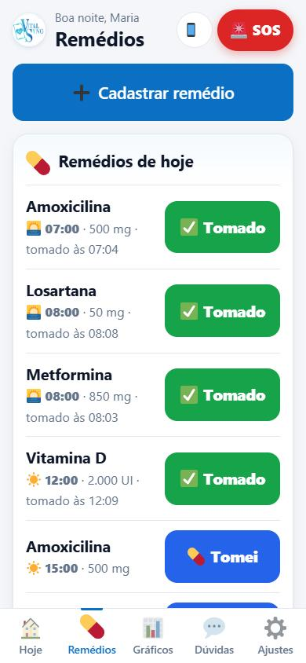
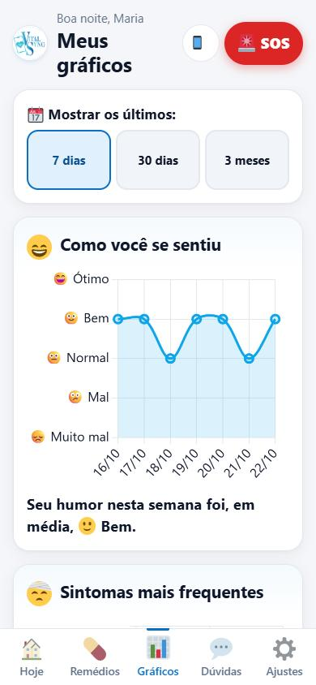
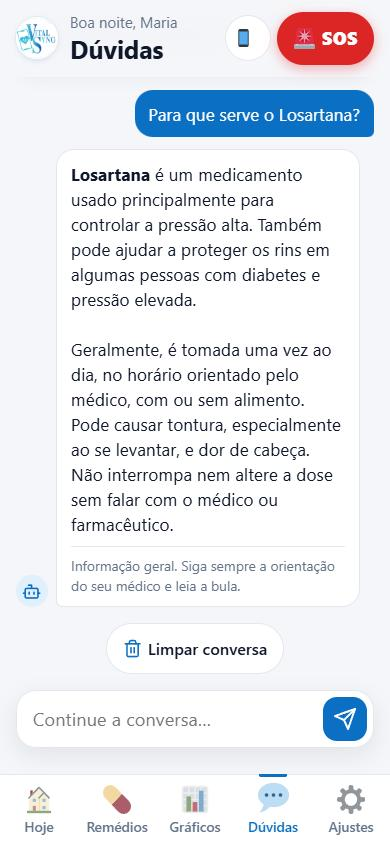
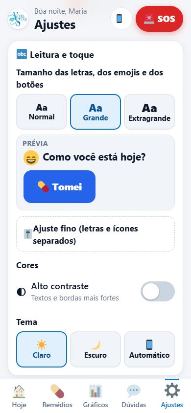
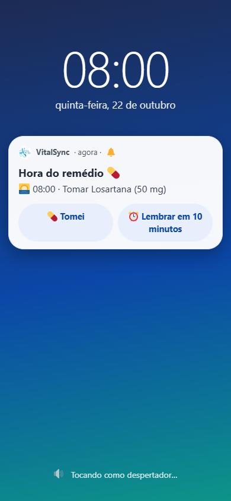

Diário por toques
Humor, sintomas, sono e água em poucos toques, sem precisar digitar.
Diário de saúde · grátis · Android
Registre como você se sente, lembre de cada remédio com alarme e acompanhe tudo em gráficos fáceis de entender. Feito para todas as idades, com letras grandes e botões simples.
Tudo pensado para ser rápido de usar, mesmo para quem não tem costume com celular.
Humor, sintomas, sono e água em poucos toques, sem precisar digitar.
Toca como um despertador, com os botões "Tomei" e "Lembrar em 10 minutos".
Veja como foi a semana ou o mês: humor, sintomas, remédios, sono e água.
Perguntas rápidas sobre saúde e sobre os seus remédios, em linguagem simples.
Ligue para a emergência ou para o seu contato de confiança com um toque.
Letras e ícones grandes, alto contraste, modo escuro e tutorial guiado.
Guarda no celular e envia uma cópia para a nuvem quando a internet voltar.
Português, inglês e espanhol — inclusive nas notificações.
Algumas telas do aplicativo.





É grátis. Baixe o arquivo pelo próprio celular e siga os passos abaixo.
No celular, toque em "Baixar para Android". O arquivo VitalSync.apk vai para a pasta Downloads. Se o navegador avisar que o arquivo pode ser perigoso, toque em "Baixar mesmo assim".
Quando o download terminar, toque em "Abrir" (ou abra o app "Arquivos" → Downloads → VitalSync.apk).
O Android vai pedir permissão para instalar apps de fora da Play Store. Toque em "Configurações" e ligue "Permitir desta fonte". Depois, volte com o botão Voltar.
Se não aparecer: Configurações → Apps → Acesso especial → Instalar apps desconhecidos → escolha o navegador ou "Arquivos" → Permitir.
Toque em "Instalar". Em celulares Xiaomi, Redmi e Poco pode aparecer uma verificação de segurança: aguarde e toque em "Instalar mesmo assim".
Abra o VitalSync, escolha o idioma, diga seu nome e sua faixa de idade. Para guardar uma cópia na nuvem, entre com sua conta Google. Pronto!
Em Ajustes → Notificações, toque em "Testar em 10 s". Se não tocar, siga as dicas do próprio app em "O alarme não tocou?" (bateria sem restrições, início automático e alarmes exatos).
O VitalSync nasceu para ajudar pessoas de todas as idades a cuidar da própria saúde no dia a dia: lembrar dos remédios, perceber como os sintomas mudam e levar informações organizadas para a consulta médica.
Conheça as pessoas que desenvolveram o VitalSync.

Desenvolvedor
Programação do aplicativo e das suas funcionalidades.

Desenvolvedor
Programação do aplicativo e das suas funcionalidades.

Designer
Identidade visual e experiência de uso.

Gestor de projeto
Planejamento, prazos e organização da equipe.

Arquiteto de soluções
Estrutura técnica e escolha das tecnologias.

Analista de QA
Testes e garantia de qualidade do aplicativo.